Heating & drying
Controlled heat across the process — dryers, roasters, ovens and thermal equipment.
Browse the full catalogue →Dryers 10 machines
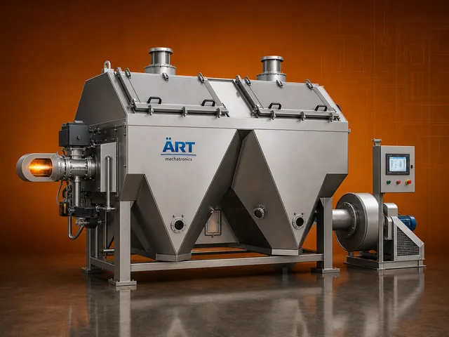
Batch Type - Hot Air Dryer
A Batch Type Dryer Machine, also known as an Industrial Hot Air Dryer or Food Drying & Roasting System, is a specially…
View details →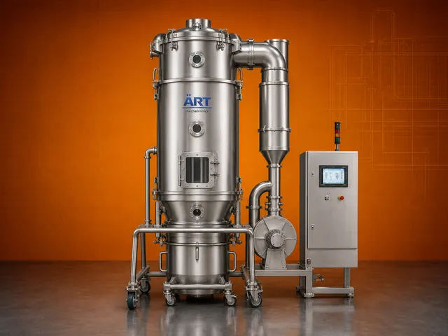
Fluidized Bed Dryer (FBD)
A Fluidized Bed Dryer (FBD), also known as a Fluid Bed Dryer, is an advanced drying system used for uniform and rapid…
View details →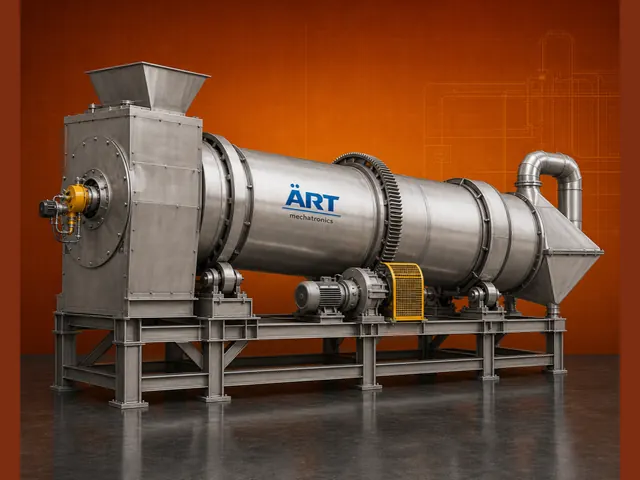
Rotary Dryer, Drum Dryer
A Rotary Dryer Machine, also known as a Rotary Drum Dryer, is a highly efficient industrial drying system used for…
View details →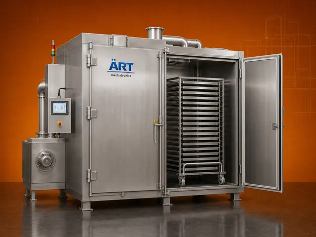
Tray Dryer, Tray Oven
A Tray Dryer Machine, also known as a Tray Oven or Hot Air Tray Dryer, is a highly efficient batch drying system…
View details →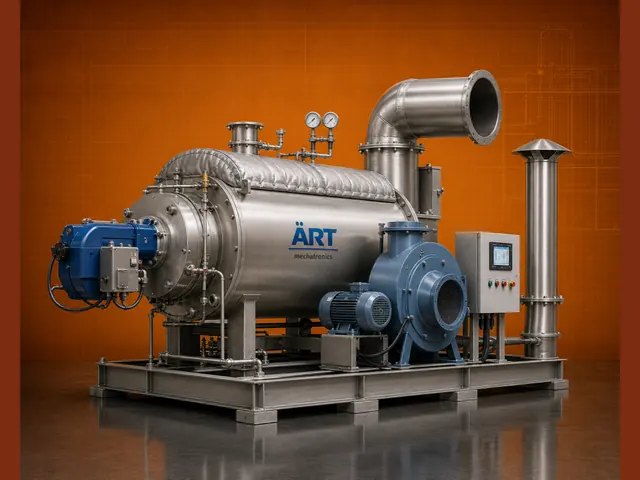
Hot Air Generator
A Hot Air Generator (HAG), also known as an Industrial Hot Air Furnace or Hot Air Heater, is a high-efficiency thermal…
View details →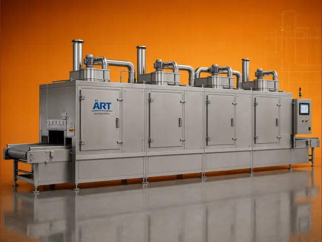
Continuous Conveyor, Tunnel Dryer
A Continuous Conveyor Type Tunnel Dryer Machine, also known as a Tunnel Dryer or Conveyor Dryer, is an advanced…
View details →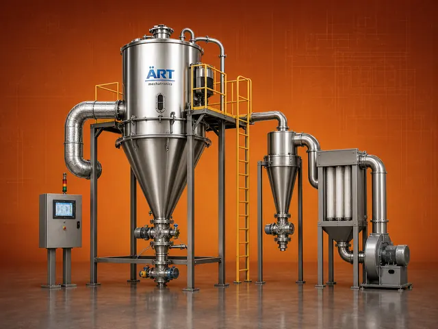
Spray Dryer
A Spray Dryer Machine, also known as an Industrial Spray Drying System, is an advanced technology used to convert…
View details →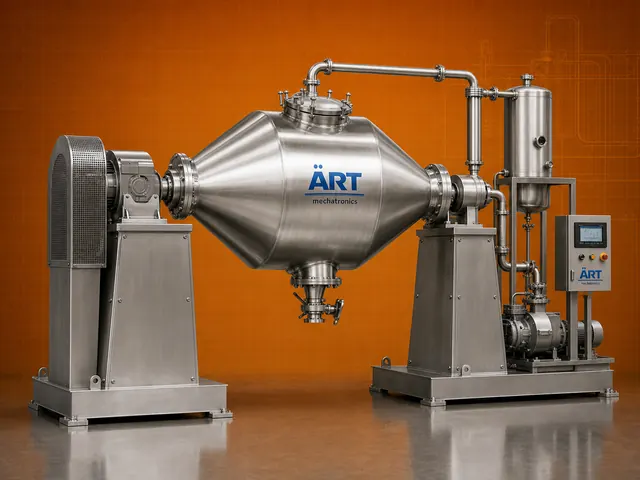
Rotocone Vacuum Dryer - Rcvd (RCVD)
A Rotocone Vacuum Dryer (RCVD), also known as a Conical Vacuum Dryer or Vacuum Dryer Machine, is an advanced…
View details →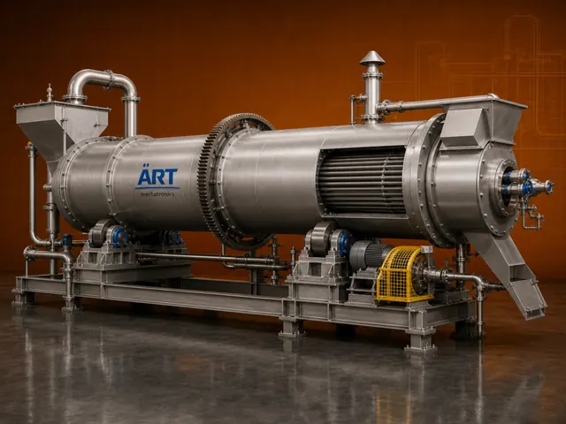
Rotary Tube Dryer
A Rotary Tube Dryer Machine, also known as a Tube Bundle Dryer or Indirect Rotary Dryer, is an advanced industrial…
View details →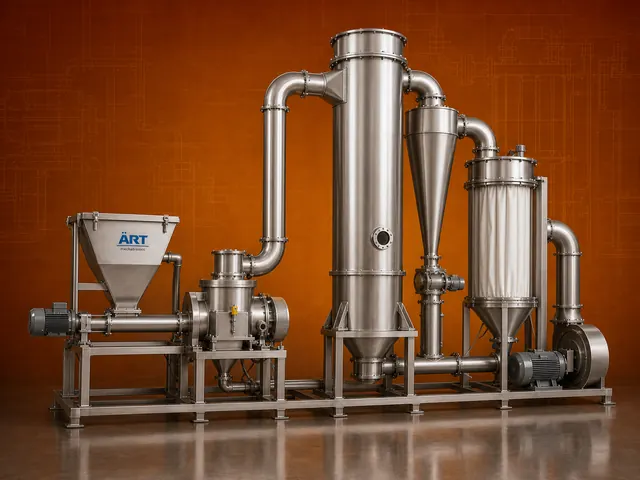
Flash Dryer
A Flash Dryer Machine, also known as a Pneumatic Dryer or Flash Drying System, is a high-speed industrial drying…
View details →Ovens & roasters 2 machines
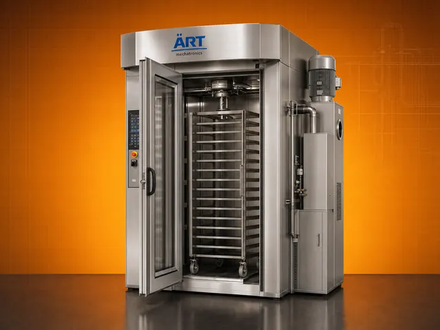
Rotary Rack Oven
A Rotary Rack Oven, also known as a Rack Oven Machine or Industrial Bakery Oven, is a high-efficiency baking system…
View details →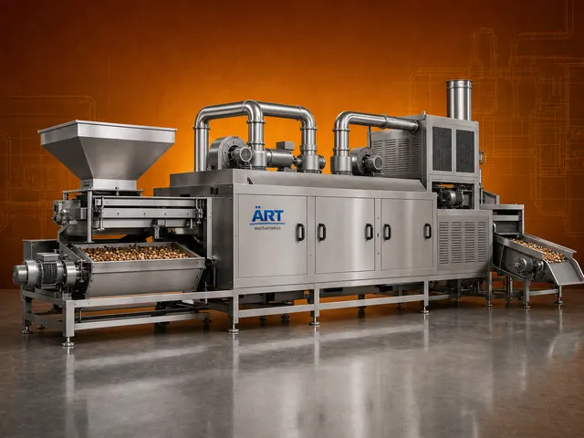
Industrial Roaster Machine
An Industrial Roaster Machine, also known as a Nut Roaster, Seed Roasting Machine, or Food Roasting System, is a…
View details →Boilers & heaters 6 machines
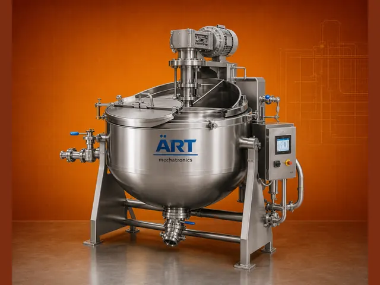
Cooking Kettle, Boiling Tank
A Tilting Cooking Tank, also known as a Boiling Tank, Steam Jacketed Kettle, or Cooking Vessel, is a versatile…
View details →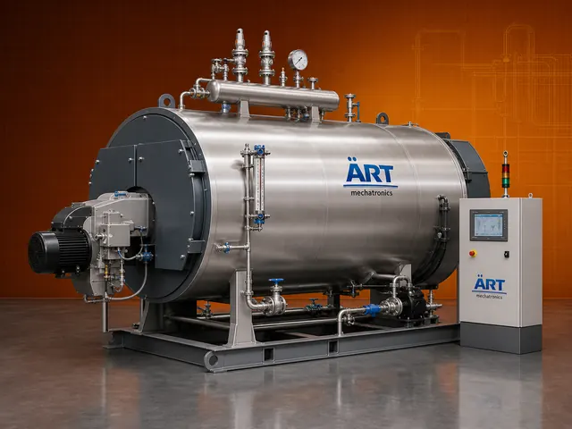
Boiler Machine
A Boiler Machine, also known as an Industrial Steam Boiler or Steam Generation System, is a critical industrial…
View details →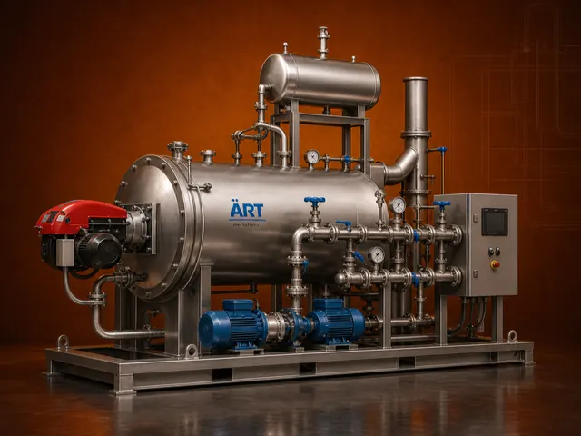
Thermic Fluid Heater
A Thermic Fluid Heater, also known as a Thermal Oil Heater or Hot Oil Heater, is a highly efficient industrial heating…
View details →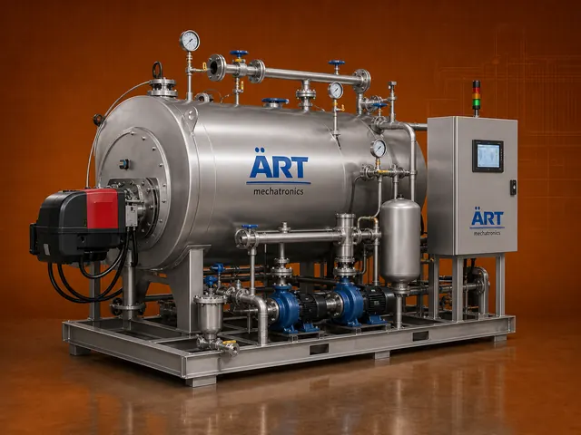
Hot Water Generator
A Hot Water Generator, also known as an Industrial Hot Water Heater or Thermic Water Heating System, is a highly…
View details →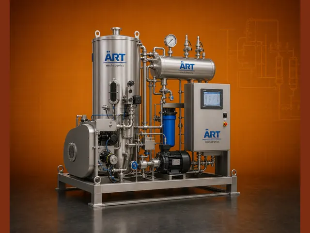
Steam Generator
A Steam Generator Machine, also known as an Industrial Steam Generator or Instant Steam Generator, is a compact and…
View details →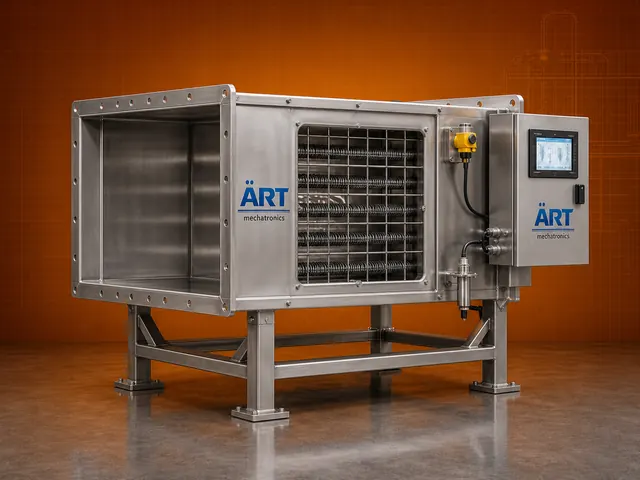
Air Duct Heater
Electric Duct Heaters and Air Heater Banks are advanced heating systems designed to heat air using electric heating…
View details →Cooking & frying 3 machines
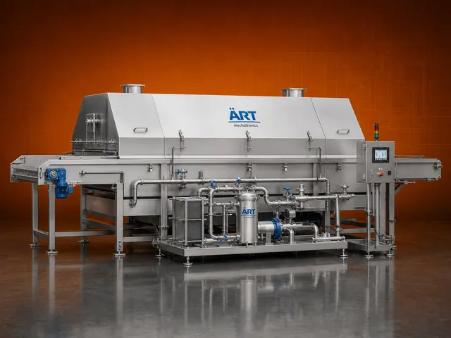
Fryer Machine
A Fryer Machine, also known as an Industrial Deep Fryer or Food Frying System, is an essential processing equipment…
View details →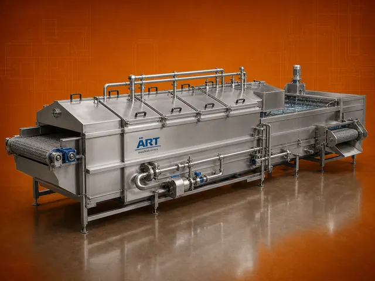
Blancher Machine
A Blancher Machine, also known as a Blanching Machine or Industrial Blancher, is a critical food processing equipment…
View details →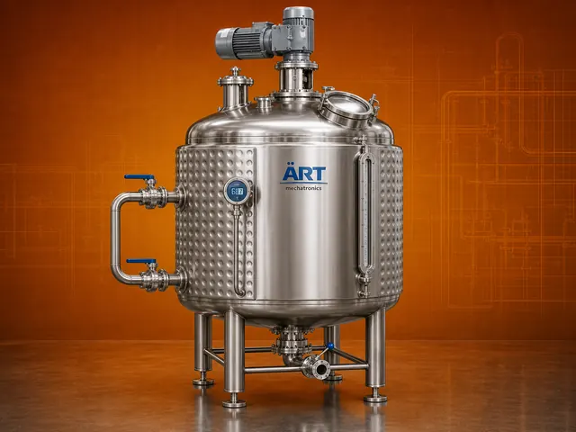
Jacketed Tank
A Jacketed Tank, also known as a Jacketed Vessel or Industrial Mixing Tank, is a versatile process equipment designed…
View details →Sterilising 2 machines
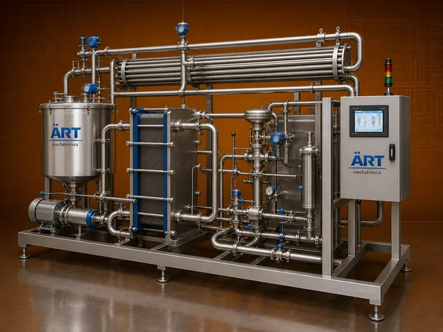
Pasteurizer Machine
A Pasteurizer Machine, also known as a Milk Pasteurizer or Industrial Pasteurization System, is a critical food…
View details →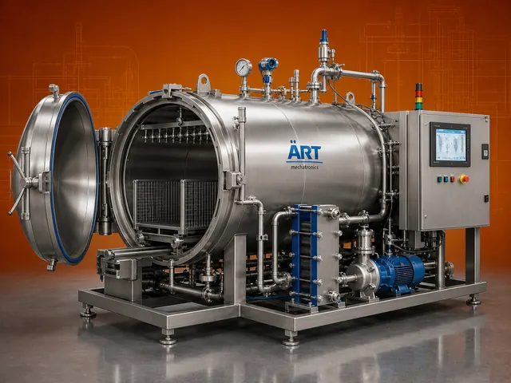
Retort / Autoclave Machine
A Retort Machine, also known as an Autoclave Sterilization Machine or Retort Sterilizer, is a critical processing…
View details →Heat recovery & furnaces 4 machines
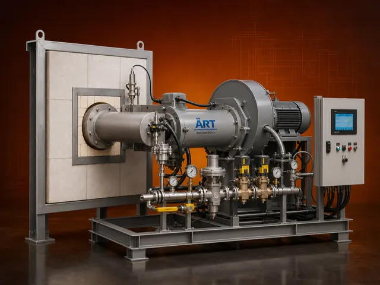
Furnace Burner
An Industrial Furnace Burner, also known as a Gas Burner, Diesel Burner, Oil Burner, or Solid Fuel Burner, is a…
View details →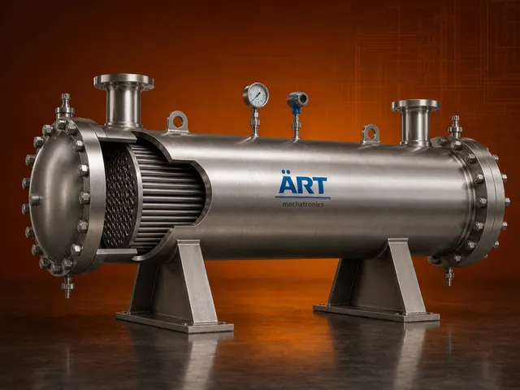
Heat Exchanger
A Heat Exchanger is an essential industrial system designed to transfer heat between two fluids without mixing them,…
View details →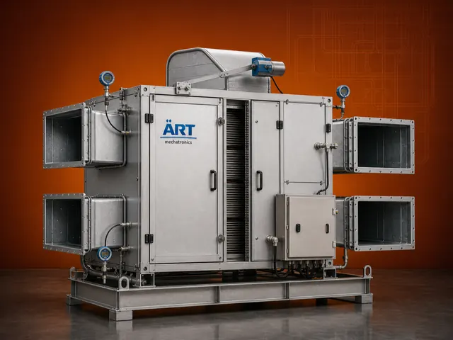
Heat Recovery Unit - Hru (HRU)
A Heat Recovery Unit (HRU), also known as a Waste Heat Recovery System, is an advanced energy-saving solution designed…
View details →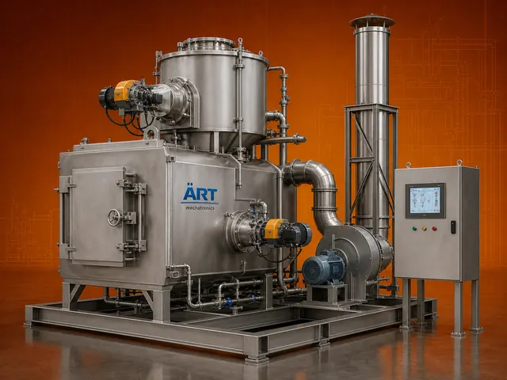
Incinerator Machine
An Incinerator Machine, also known as an Industrial Waste Incinerator or Waste Disposal Incinerator, is a specialized…
View details →Not finding it? Ask us on WhatsApp →
Browse the rest of the range
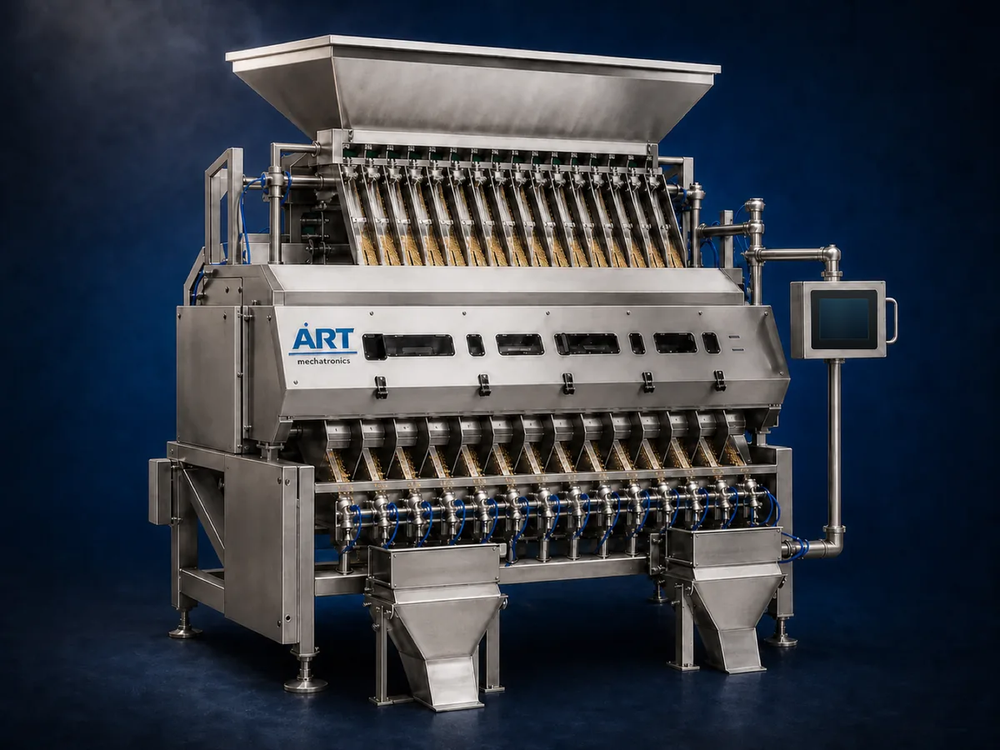
Cleaning, sorting & grading 24 machinesCleaning, sorting & grading
See all 24 machines →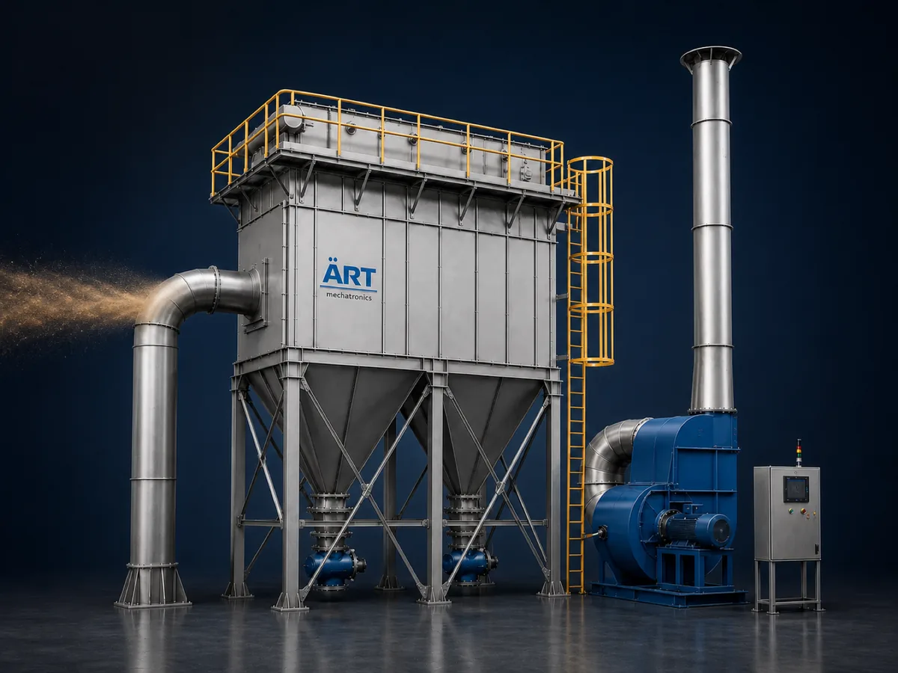
Dust collection & pollution control 15 machinesDust collection & pollution control
See all 15 machines →